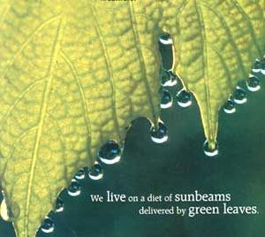
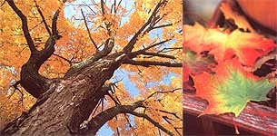
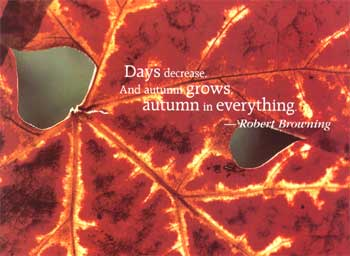
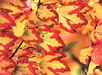

Each autumn here in the mountains of western North Carolina, a crisis strikes that is so dire local emergency shelters are opened to house the refugees. The crisis is called coming to see the leaves and those refugees are the hapless travelers who find not only fall's spectacular scenery but also a panorama of no-vacancy signs at the area's motels, all packed solid as bushel baskets with countless other leaf-lookers.
This phenomenon is hardly limited to the woods that lead down the long, rumpled spines of the Blue Ridge and Great Smoky Mountains. Wherever there are frosty nights and deciduous forests there are pilgrims who come to see the trees emerge from their summer-green chrysalis, the leaves of scarlet, orange, yellow, purple and bronze fluttering like day-old butterflies drying their wings.
By the thousands, from coast to coast and border to border, we mortals seek the high ground to get a better view. We line ridgetops and overlooks, posted like sentinels, gazing outward at-what?
We're drawn by the colors, of course. But there's a deeper power at work, too, an attraction as compelling and primal as our pull to the sea. In summer, our species flocks to the beaches. In autumn, it's to the forests. In both places, we gain a sense of homecoming.
Maybe it's because we humans acknowledge instinctively the forces that make our world possible. The sea is the embryonic fluid from which all life has sprung. And the leaves? Within each leaf lies not only the secret of autumn's brilliant spectacle, but the secret of life itself.
In the minute space between a leaf's upper and lower surfaces, a space no thicker than the paper on which these words are printed, is the machine that drives our planet's food chain and helps to sustain its atmosphere. In this space, and especially near the upper surface (which receives the most sunlight) are cells that bear a concentration of protoplasmic hits called chloroplasts. Here, water drawn from roots far below and carbon dioxide inhaled by thousands of microscopic leaf pores, or stomata, meet. And here, in leaf chloroplasts, the secret of life-a process otherwise known as photosynthesis takes place.
Chloroplasts contain enzymes and several pigments, the most dominant of which is a substance called chlorophyll. All the pigments absorb light energy to be used by the leaf, but each absorbs only a particular range of wavelengths, or part of the spectrum.
Chlorophyll's taste for light runs to the high-energy violet-blue and low-energy redorange ranges, and completely rejects-in other words, reflects-green. That's why most leaves look green to us during the growing season.
But chlorophyll is remarkable not just for its color o- appetite for light. The real magic is its ability to use the light energy it and the other pigments absorb, as well as use carbon dioxide and water from the air and soil, to power a series of chemical reactions that ultimately converts solar energy to chemical, consumable and edible forms: glucose sugar, starches and other high-energy carbohydrates. These substances are piped through the leaf and into the tree's tissues, where they're used as food to help the tree grow.
At the same time, for every molecule of carbon dioxide inhaled by a leaf for photosynthesis, a molecule of pure oxygen is exhaled, breathing new life into our atmosphere.
Leaves release excess water as vapor through their stomata. Eventually that water will vaporize again-and again, and again, and again -gather in a cloud, fall to Earth and make the journey through a plant's tissues to its life-sustaining leaves.
Only green plants are capable of this photosynthetic feat, converting the sun's energy into food. Animals, insects and all other living creatures on Earth either must eat green plants or eat organisms that eat green plants, to obtain the stored energy necessary for survival. Each of us lives on a diet of sunbeams, delivered to us by leaves. Without the alchemy that each green leaf performs from sunup to Sundown during the growing season, life simply could not he.
Fall's show actually begins, though in green disguise, on the first day of summer, June 22, the longest day of the year. With each ensuing clay the sun takes a lower, more southerly path across the sky.
The steadily diminishing daylight triggers all manner of winter-preparation activities in nature. Birds fly south to find warmer weather and a reliable food supply. Mammals add fat and fur to stave off the coming cold. And trees shed their leaves to keep from dying of thirst.
Deciduous trees lose vast amounts of water by evaporation through their soft, porous leaves. In a single summer, a typical beech tree sprays nearly 4,600 gallons of vaporized water through its 200,000 leaves.
In winter, tree roots can't easily draw new water in from cold or frozen soil to replace lost water. This is no problem for conifers, whose narrow, waxy needles give up relatively little moisture. But a fully leafed, vapor-breathing deciduous tree would quickly use up all the water stored in its tissues. The foliage would catch snow and ice, too, breaking branches with the weight.
So the leaves have to go. As autumn approaches most of the minerals and nutrients stored in each leaf are sent back to the winter pantry, the tree itself. The juncture between leaf stem and tree branch slowly seals itself off, forming a corky layer called the abscission zone.
Photosynthesis and chlorophyll production cease. Beginning at the edges of the leaf send proceeding inward toward the major veins, the green pigment fades away like nest from a mirror, revealing the other pigments.
These are chlorophyll's shy cousins. the yellow- pigment xanthophyll and the redorange carotene. They emerge alone or in varying combination, depending on the type of tree, and are responsible for striking canary-yellow poplars and aspens, bronze beeches, golden hickories and sweet gums.
In many other trees such as black gum, sassafras, dogwood, and some maples and oaks, the pigment anthocyanin adds red to the palette. Just how much red depends not only on the kind of tree but also on the weather, because anthocyanin is formed only when sugars trapped in the leaf during cold snaps are exposed to direct sunlight.
It's anthocyanin that varies most from year to year, making some fall leaf displays more colorful than others. A sunny, early autumn punctuated by crisp, cold nights paints a landscape bright with scarlets, purples, reds and oranges. Cloudy days and mild weather, or an extended summer drought that inhibits sugar production, result in a more monochromatic scheme of yellows and browns.
Eventually all leaves lose their brighter pigments and turn brown. For a few fleeting weeks though, each tree contributes its own characteristic color to the fall patchwork. In their last hurrah the leaves cling to the branches only by the barest of threads, their abscission zones weakened. One by one, each leaf is torn from its parent tree by a gust of wind or an autumn rain and spirals to the ground.
Once returned to Earth, the season's leaves gradually decompose, conditioning and adding their minerals to the soil and supporting countless unseen creatures-earthworms, fungi and more-vital to the life of the tree above. Eventually their nutrients will be drawn back up through roots and living plant tissue and finally into leaves again, green and growing until the coming of another fall, another turn in the forest cycle.
|
 Photo by David Cavagnaro Right. The stop and go of chlorophyll gives this maple leaf its red-light/green-light nature. |
 Photos by David Cavagnaro (2) |
 |
|
 |
|
|